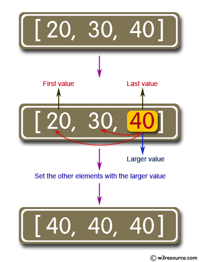

Escriba un programa JavaScript para encontrar el valor más grande entre el primero o el último y establezca todos los demás elementos con ese valor. Muestre el nuevo arreglo. R:74
Escriba un arreglo de números separados por una coma (3 números mínimos):
Verificar arreglo
Descripción gráfica del Ejercicio.
